Родительский контроль на Windows 7
Для использования родительского контроля в Windows 7, необходимо создать ученую запись для ребенка, у которой будут ограниченные права в операционной системе.
Если на учетной записи администратора нет пароля, потребуется создать пароль для ограничения доступа детей во «взрослую» систему. При запуске компьютера, появится выбор для входа в систему: учетная запись администратора (родитель) и другая учетная запись (ребенок). Ребенок не сможет войти в вашу учетную запись без знания пароля, поэтому он сможет воспользоваться только своей учетной записью с ограниченными правами в Windows.
Поставить пароль на учетную запись можно следующим способом:
Войдите в меню «Пуск», откройте «Панель управления». В «Панели управления» выберите для просмотра «Мелкие значки», а затем войдите в «Учетные записи пользователей». Нажмите на пункт «Создание пароля своей учетной записи». Введите пароль, подтвердите пароль, если хотите, можете создать подсказку (она будет видна всем пользователям компьютера).
После этого создадим учетную запись для ребенка:
В окне «Внесение изменений в учетную запись пользователя» нажмите на «Управление другой учетной записью». В окне «Выберите учетную запись для изменения» нажмите на «Создание учетной записи».
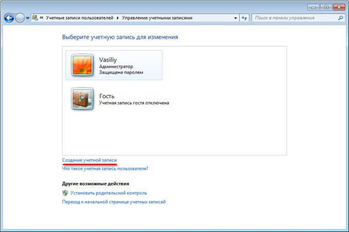Дайте имя учетной записи (выберите любое подходящее имя), назначьте тип доступа: «Обычный», а затем нажмите на кнопку «Создание учетной записи».
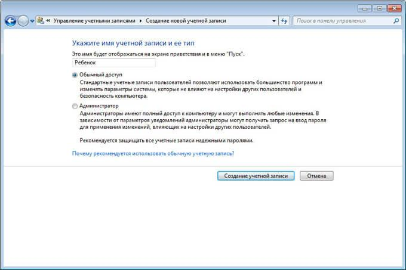Создавать пароль для этой учетной записи не обязательно, если вы не будете использовать на компьютере дополнительный компонент Семейная безопасность Windows Live. В противном случае, придумайте простой пароль, который будет вводить ребенок при входе в свой профиль операционной системы.
Включение родительского контроля в Windows 7
Выполните настройки параметров родительского контроля:
В окне для выбора учетной записи появилась новая учетная запись. Щелкните мышью по учетной записи ребенка. В окне «Внесение изменений в учетную запись Х» (Х — имя учетной записи ребенка) нажмите на ссылку «Установить родительский контроль».
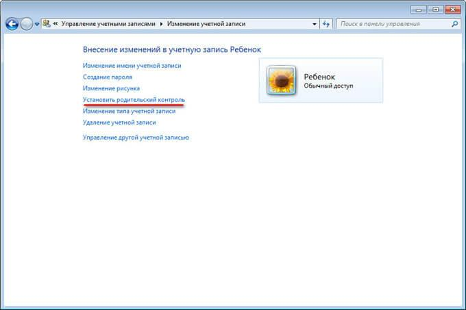В окне «Выбор пользователя и настройка параметров родительского контроля» выберите учетную запись ребенка.
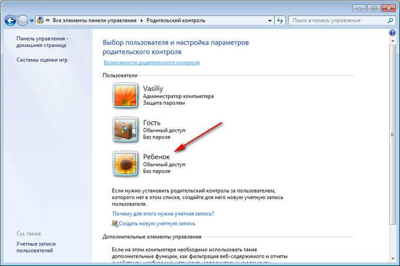В окне «Выбор действий, разрешенных Х», в параметре «Родительский контроль» активируйте пункт «Включить, используя текущие параметры».
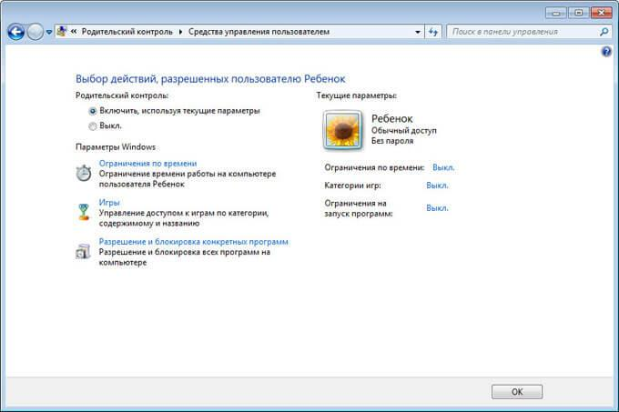Как настроить родительский контроль Windows 7
В настройке «Параметры Windows» нажмите на «Ограничения по времени».
Выделите с помощью курсора мыши время для разрешения или запрещения работы на компьютере. Расписание можно составить по дням недели.
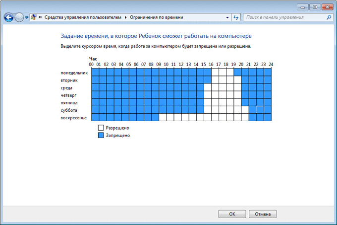Нажмите на параметр «Игры», в окне «Выбор типов игр. В которые может играть Х» выберите подходящие настройки. Здесь можно запретить игры на компьютере, задать категории для игр, настроить запрещение игр по названию.
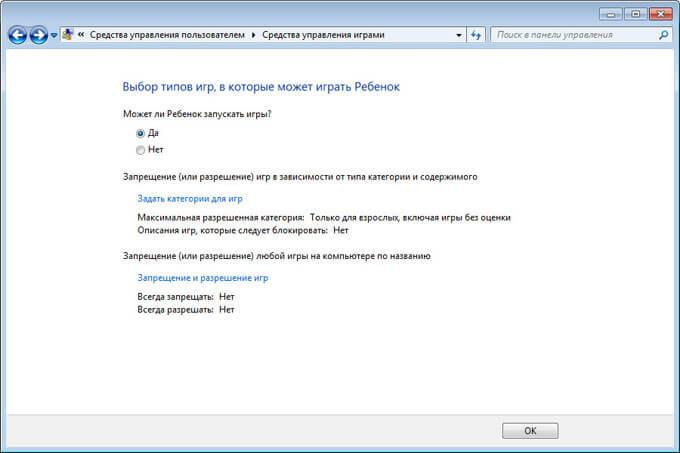Следующий параметр «Разрешение и блокировка конкретных программ» поможет настроить правила для использования приложений, установленных на компьютере. Выберите один из двух вариантов: «Ребенок может использовать все программы» или «Ребенок может работать только с разрешенными программами». В случае применения ограничений, выберите программы, разрешенные для запуска на компьютере.
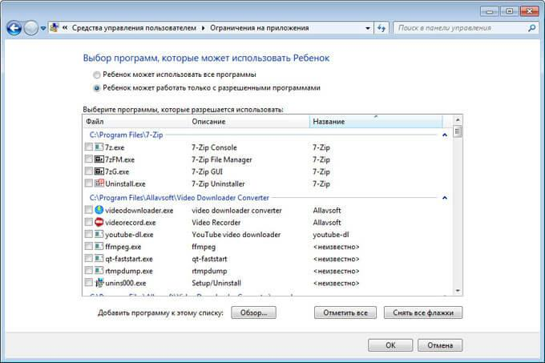После завершения всех настроек, нажмите на кнопку «ОК».
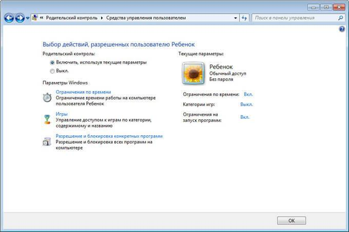Все, родительский контроль готов к использованию. Перезагрузите компьютер.
Ребенок входит в систему, в свою учетную запись. При попытке запуска заблокированной программы, операционная система выведет сообщение об этом на Рабочий стол.
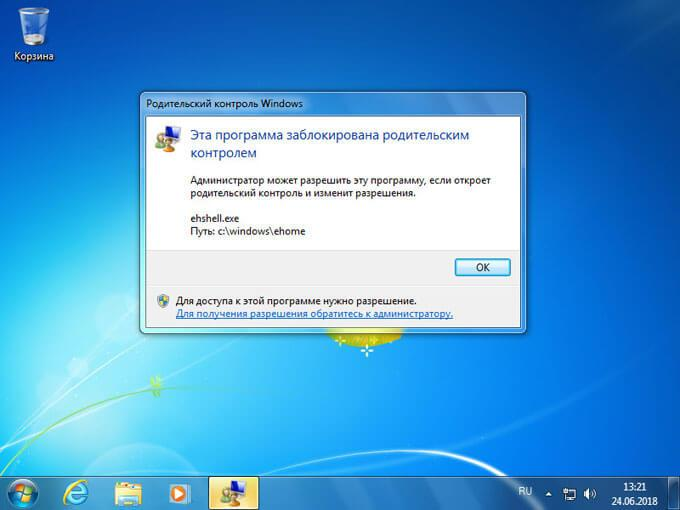Родительский контроль на Windows 10
Первым шагом в конфигурировании родительского контроля является формирование учетной записи для маленького пользователя. Проще всего задача решается через новое меню «Параметры»
Вызываем его, зажав Win+I.
Переходим в раздел «Учетные записи».
Активируем вкладку «Семья/другие пользователи».
Жмем по пиктограмме с плюсиком «Добавить члена семьи».
Останавливаемся на первом варианте «Добавить аккаунт ребенка», после чего задаем адрес личной электронной почты, при ее отсутствии или нежелании вводить эти данные, выбираем пункт «Нет адреса почтового ящика». Хотя при выполнении следующей итерации его придется ввести или принять предложение завести электронную почту.
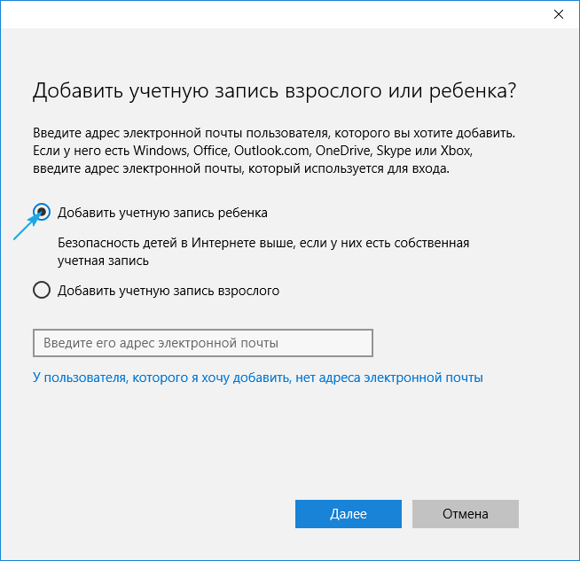Следующая итерация — указание личных данных (имя и фамилия), а также почты, если на предыдущем шаге этого сделано не было. Далее придется ввести дату рождения ребенка (Майкрософт хочет знать все, потому здесь можно слукавить, как и в случае с именем), город проживания и задать пароль для создаваемой учетной записи. Если укажете, что чадо младше 8 лет, Windows 10 автоматически активирует повышенные меры предосторожности для нового аккаунта, а если ребенок старше 8 лет — все настройки можно изменять вручную.
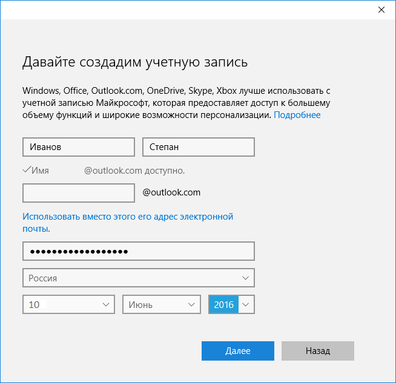Затем разработчик идет еще дальше и попросит указать личный номер телефона и еще один почтовый адрес, вдруг придется проводить восстановление учетной записи. Телефонный номер придется подтвердить, потому схитрить здесь не получиться.
На финальном этапе будет предложено задействовать сервис Microsoft Advertising, чего делать не стоит. Эта служба собирает данные о пользователей и использует их для демонстрации рекламных сообщений на основе его интересов.
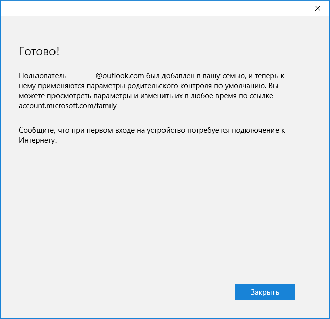Закрываем окно и можем авторизоваться в новой учетной записи. Для этого, как упоминалось, необходимо соединение с интернетом. После входа в новый аккаунт нужно выполнить его дополнительную настройку, да и сообщение с данными, что родители могут следить за действиями ребенка, выскакивает только при первой авторизации в учетной записи.
Закрываем окно и можем авторизоваться в новой учетной записи. Для этого, как упоминалось, необходимо соединение с интернетом. После входа в новый аккаунт нужно выполнить его дополнительную настройку, да и сообщение с данными, что родители могут следить за действиями ребенка, выскакивает только при первой авторизации в учетной записи.
Настройка ограничений для аккаунта осуществляется по ссылке account.microsoft.com/family после авторизации на ресурсе Майкрософт из-под аккаунта создававшего ограниченную учетную запись родителя. На эту страницу можно попасть и через «Параметры». Во вкладке «Семья/другие пользователи» нажимаем по кнопке «Управление параметрами через Интернет».
Настраиваем ограниченную учетную запись
После авторизации на microsoft.com появится список учетных записей всех членов семьи. В нем выбираем аккаунт ребенка.
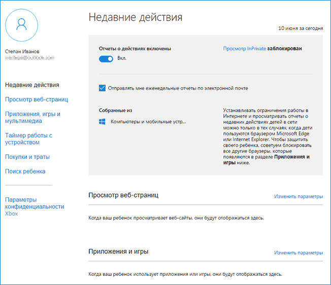В главном окне станут доступными следующие опции:
Отчеты о совершенных действиях — активирована по умолчанию с функцией оповещения по электронной почте;
Просмотр InPrivate — функция анонимного посещения web-ресурсов без хранения истории навигации (для детей до восьми лет по умолчанию отключена).
Ниже размещен перечень других параметров и настроек.
1. Просмотр web-страниц. По умолчанию вредоносные и нежелательные для посещения детьми ресурсы блокируются, а в поисковой системе включён безопасный поиск. При необходимости можно подкорректировать перечень запрещенных сайтов.
Настройки (фильтр сайтов, безопасный поиск и сбор сведений о навигации по сети) применимы только для интегрированных интернет-обозревателей (IE и Edge). Если необходим полный отчет о поведении пользователя за компьютером, иные браузеры следует заблокировать.
2. Приложения и игры. В окне отображается перечень инсталлированных на компьютере программ, в том числе интегрированных в операционную систему, установленных пользователем. В их число входят как портативные приложения, так и все обнаруженные игры. Здесь содержатся данные о времени запуска и выключения софта.
Меню позволяет провести блокировку приложений, которые появятся в списке (такое случится только после первого запуска программы/игры из-под ограниченной учетной записи), независимо от того, инсталлирована игра/программа, или является портативной. Получение контента из Магазина Windows можно ограничить по возрасту.
3. Таймеры работы за ПК. В окне выводится информация о длительности, времени начала и завершения сеанса. Здесь можно указывать длительность рабочих сеансов и указывать время, когда чадо может заходить в учетную запись.
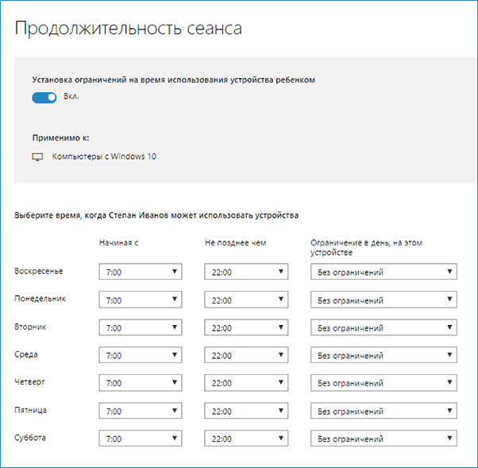4. Покупки/траты. При наличии денег на счету маленького пользователя можно отслеживать расход его личных средств, потраченных на приобретение цифрового контента в Магазине Виндовс или совершение покупок через встроенные в игры функции. Здесь можно пополнить опустевший счет, не предоставляя доступа к прикрепленной банковской карточке.
5. Поиск ребенка — функция необходима родителям, чье дитя берет с собой портативное устройство, например, на учебу. Она поможет отследить место нахождения пользователя во время эксплуатации девайса (ноутбука, планшета).
В принципе, ничего сложного или непонятного с работой родительского контроля в «десятке» нет, помимо пары огорчений:
обязательное наличие интернета;
ввод конфиденциальной информации о себе и других членах семьи;
невозможность блокировки приложений до их первого запуска из-под ограниченного аккаунта;
обновление конфигурации детского аккаунта со значительной задержкой (на этом стоит немного остановиться).